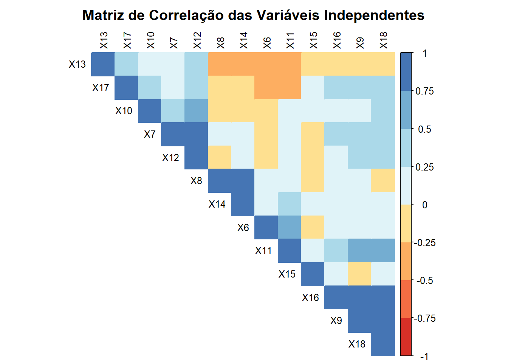
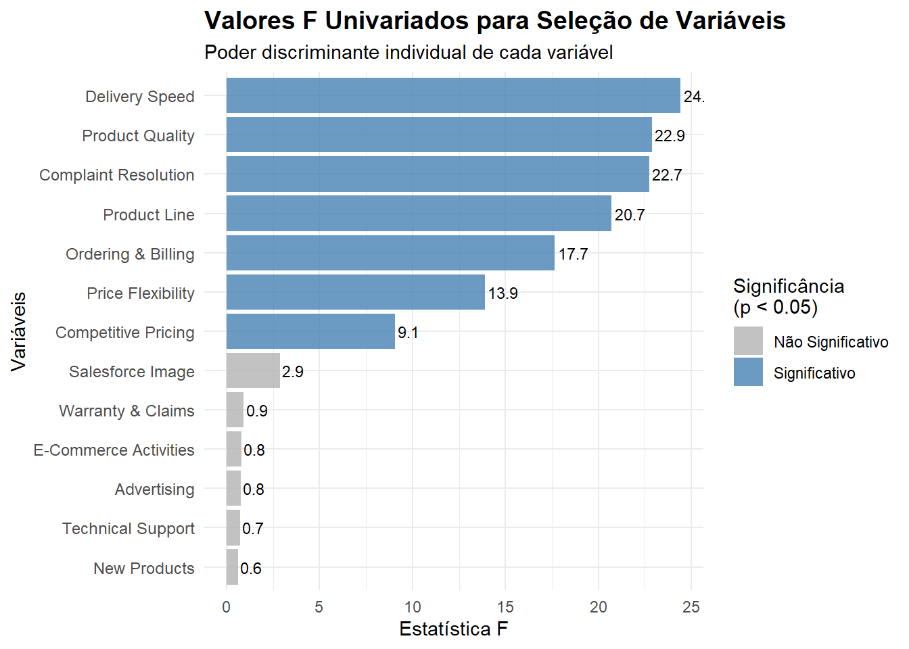
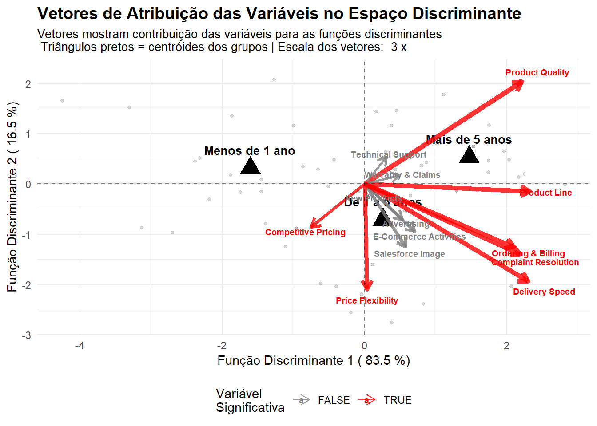
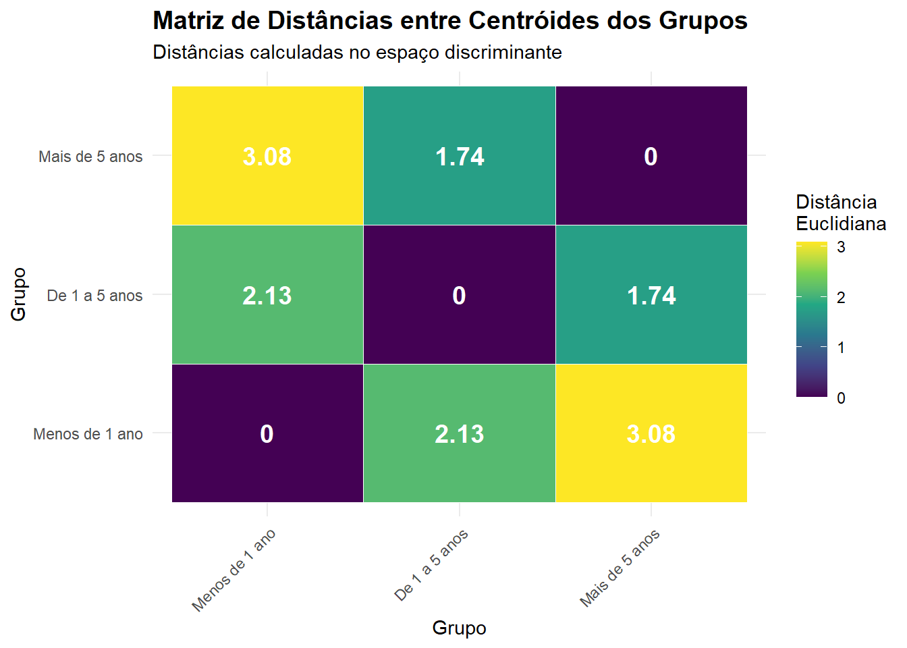
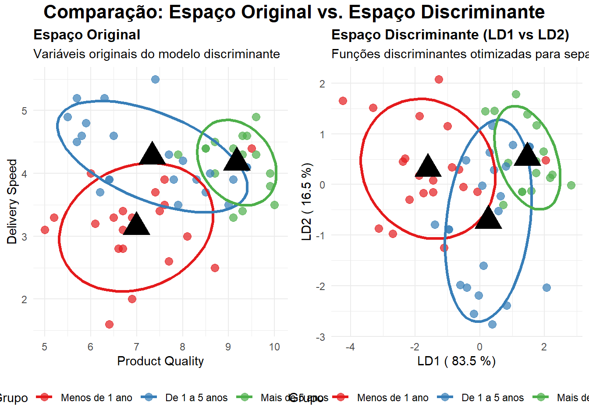
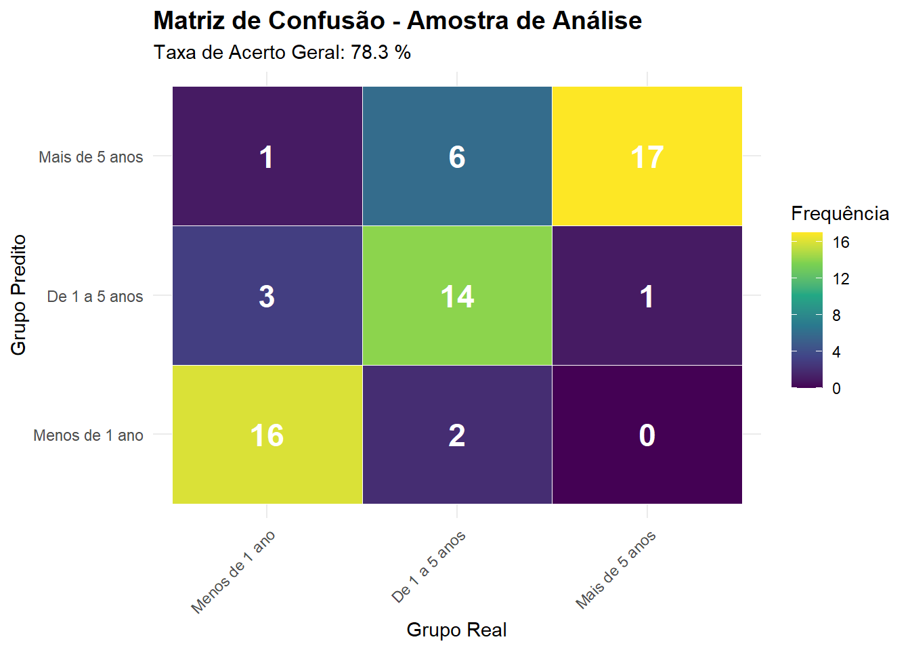
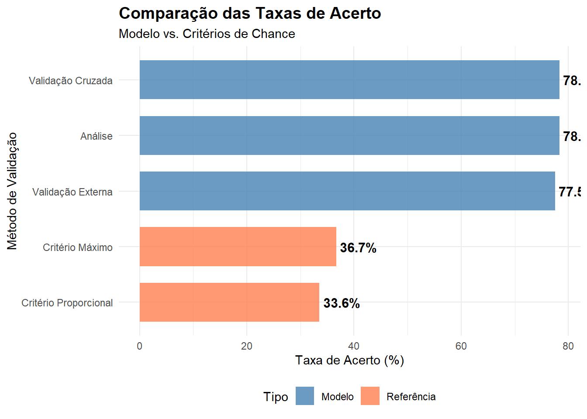

library(MASS)
library(klaR)
library(car)
library(ggplot2)
library(dplyr)
library(corrplot)
library(caret)
library(skimr)
library(MVN)
library(biotools)
library(GGally)
library(nnet)
library(pROC)
library(tidyr)
library(readr)
library(haven)
library(gridExtra)
library(reshape2)
library(viridis)
library(plotly)
library(RColorBrewer)ANÁLISE DISCRIMINANTE
Análise Discriminante - Exemplo HBAT
Reprodução do Exemplo de Hair et al. - Dataset HBAT
Nesta seção, reproduziremos a análise discriminante apresentada no livro Hair et al., utilizando o dataset HBAT para classificar clientes em três grupos baseados no tempo de relacionamento com a empresa.
O HBAT é um dataset educacional fictício amplamente utilizado no livro clássico “Multivariate Data Analysis” de Joseph Hair et al., representando uma empresa de distribuição industrial. O dataset contém 100 observações de clientes classificados em três grupos baseados no tempo de relacionamento: Grupo 1 (menos de 1 ano), Grupo 2 (1 a 5 anos) e Grupo 3 (mais de 5 anos). As variáveis incluem a variável dependente X1 (Customer Type) e 13 variáveis independentes (X6-X18) que medem percepções dos clientes sobre diferentes aspectos da empresa, como qualidade do produto (X6), atividades de e-commerce (X7), suporte técnico (X8), resolução de reclamações (X9), propaganda (X10), linha de produtos (X11), imagem da força de vendas (X12), preços competitivos (X13), garantia e reclamações (X14), novos produtos (X15), pedidos e faturamento (X16), flexibilidade de preços (X17) e velocidade de entrega (X18). Todas as variáveis independentes utilizam uma escala de 0-10, facilitando comparações e interpretações. Este dataset é ideal para demonstrar técnicas de análise multivariada, especialmente análise discriminante, pois oferece um contexto empresarial realista com dados limpos e estruturados, permitindo focar na aplicação das técnicas estatísticas sem se preocupar com problemas complexos de qualidade de dados típicos de datasets reais.
Estágio 1: Objetivos da Análise Discriminante
O objetivo é identificar as características perceptuais que distinguem clientes baseados no tempo de relacionamento: - Grupo 1: Menos de 1 ano - Grupo 2: De 1 a 5 anos
- Grupo 3: Mais de 5 anos
Carregamento e Inspeção dos Dados do arquivo spss
# Carregando os dados HBAT
hbat <- haven::read_sav("data/hbat.sav")
glimpse(hbat)Rows: 100
Columns: 24
$ id <dbl> 1, 2, 3, 4, 5, 6, 7, 8, 9, 10, 11, 12, 13, 14, 15, 16, 17, 18, 19,…
$ x1 <dbl+lbl> 2, 3, 3, 1, 2, 1, 1, 2, 2, 1, 3, 1, 1, 3, 2, 3, 2, 2, 2, 3, 1,…
$ x2 <dbl+lbl> 0, 1, 0, 1, 0, 1, 1, 0, 1, 0, 0, 0, 1, 1, 0, 0, 1, 0, 1, 0, 0,…
$ x3 <dbl+lbl> 1, 0, 1, 1, 1, 0, 1, 1, 1, 1, 1, 1, 0, 0, 1, 0, 0, 1, 1, 1, 0,…
$ x4 <dbl+lbl> 1, 0, 1, 1, 0, 1, 1, 1, 1, 1, 0, 1, 0, 0, 1, 0, 1, 1, 1, 1, 1,…
$ x5 <dbl+lbl> 1, 0, 1, 0, 1, 0, 0, 0, 0, 0, 1, 0, 1, 1, 1, 0, 1, 0, 0, 0, 0,…
$ x6 <dbl+lbl> 8.5, 8.2, 9.2, 6.4, 9.0, 6.5, 6.9, 6.2, 5.8, 6.4, 8.7, 6.1, 9.…
$ x7 <dbl+lbl> 3.9, 2.7, 3.4, 3.3, 3.4, 2.8, 3.7, 3.3, 3.6, 4.5, 3.2, 4.9, 5.…
$ x8 <dbl+lbl> 2.5, 5.1, 5.6, 7.0, 5.2, 3.1, 5.0, 3.9, 5.1, 5.1, 4.6, 6.3, 4.…
$ x9 <dbl+lbl> 5.9, 7.2, 5.6, 3.7, 4.6, 4.1, 2.6, 4.8, 6.7, 6.1, 4.8, 3.9, 6.…
$ x10 <dbl+lbl> 4.8, 3.4, 5.4, 4.7, 2.2, 4.0, 2.1, 4.6, 3.7, 4.7, 2.7, 4.4, 5.…
$ x11 <dbl+lbl> 4.9, 7.9, 7.4, 4.7, 6.0, 4.3, 2.3, 3.6, 5.9, 5.7, 6.8, 3.9, 6.…
$ x12 <dbl+lbl> 6.0, 3.1, 5.8, 4.5, 4.5, 3.7, 5.4, 5.1, 5.8, 5.7, 4.6, 6.4, 6.…
$ x13 <dbl+lbl> 6.8, 5.3, 4.5, 8.8, 6.8, 8.5, 8.9, 6.9, 9.3, 8.4, 6.8, 8.2, 7.…
$ x14 <dbl+lbl> 4.7, 5.5, 6.2, 7.0, 6.1, 5.1, 4.8, 5.4, 5.9, 5.4, 5.8, 5.8, 6.…
$ x15 <dbl+lbl> 4.3, 4.0, 4.6, 3.6, 4.5, 9.5, 2.5, 4.8, 4.4, 5.3, 7.5, 5.9, 5.…
$ x16 <dbl+lbl> 5.0, 3.9, 5.4, 4.3, 4.5, 3.6, 2.1, 4.3, 4.4, 4.1, 3.8, 3.0, 5.…
$ x17 <dbl+lbl> 5.1, 4.3, 4.0, 4.1, 3.5, 4.7, 4.2, 6.3, 6.1, 5.8, 3.7, 4.9, 4.…
$ x18 <dbl+lbl> 3.7, 4.9, 4.5, 3.0, 3.5, 3.3, 2.0, 3.7, 4.6, 4.4, 4.0, 3.2, 4.…
$ x19 <dbl+lbl> 8.2, 5.7, 8.9, 4.8, 7.1, 4.7, 5.7, 6.3, 7.0, 5.5, 7.4, 6.0, 8.…
$ x20 <dbl+lbl> 8.0, 6.5, 8.4, 6.0, 6.6, 6.3, 7.8, 5.8, 7.5, 5.9, 7.0, 6.3, 8.…
$ x21 <dbl+lbl> 8.4, 7.5, 9.0, 7.2, 9.0, 6.1, 7.2, 7.7, 8.2, 6.7, 8.4, 6.6, 7.…
$ x22 <dbl+lbl> 65.1, 67.1, 72.1, 40.1, 57.1, 50.1, 41.1, 56.1, 56.1, 59.1, 68…
$ x23 <dbl+lbl> 1, 0, 1, 0, 0, 0, 0, 0, 1, 0, 0, 0, 1, 1, 1, 0, 1, 1, 0, 1, 0,…Definição das Variáveis do Modelo
Com base na inspeção dos dados, identificamos que o dataset HBAT possui exatamente as variáveis necessárias: - x1: Variável dependente (Customer Type: 1=Menos de 1 ano, 2=De 1 a 5 anos, 3=Mais de 5 anos) - x6-x18: Variáveis independentes (percepções sobre a HBAT)
Configuração das Variáveis:
- Variável dependente: x1
- Variáveis independentes: x6, x7, x8, x9, x10, x11, x12, x13, x14, x15, x16, x17, x18
- Total de variáveis independentes: 13
Preparação do Dataset Final
Resumo da Preparação dos Dados:
- Total de observações: 100
- Variáveis independentes: 13
- Grupos identificados: 3
Distribuição da Variável Dependente (X1):
| Grupo | Frequência |
|---|---|
| Menos de 1 ano | 32 |
| De 1 a 5 anos | 35 |
| Mais de 5 anos | 33 |
Descrições das Variáveis:
| Código | Descrição |
|---|---|
| X1 | Customer Type |
| X6 | Product Quality |
| X7 | E-Commerce Activities |
| X8 | Technical Support |
| X9 | Complaint Resolution |
| X10 | Advertising |
| X11 | Product Line |
| X12 | Salesforce Image |
| X13 | Competitive Pricing |
| X14 | Warranty & Claims |
| X15 | New Products |
| X16 | Ordering & Billing |
| X17 | Price Flexibility |
| X18 | Delivery Speed |
Estágio 2: Delineamento da Pesquisa de Análise Discriminante
# Divisão em amostras de análise e validação
set.seed(123)
n_total <- nrow(hbat_clean)
indices_analise <- sample(1:n_total, size = floor(0.6 * n_total))
amostra_analise <- hbat_clean[indices_analise, ]
amostra_validacao <- hbat_clean[-indices_analise, ]
# Verificar balanceamento dos grupos
prop_analise <- table(amostra_analise$X1) / nrow(amostra_analise)
prop_validacao <- table(amostra_validacao$X1) / nrow(amostra_validacao)A análise discriminante requer a divisão dos dados em amostras de estimação e validação para avaliar adequadamente o desempenho do modelo. Utilizamos uma divisão de 60% para análise e 40% para validação.
Características das Amostras:
- Amostra de análise: 60 casos
- Amostra de validação: 40 casos
Distribuição dos Grupos por Amostra:
| Grupo | Análise (n) | Análise (%) | Validação (n) | Validação (%) |
|---|---|---|---|---|
| Menos de 1 ano | 20 | 33.3% | 12 | 30% |
| De 1 a 5 anos | 22 | 36.7% | 13 | 32.5% |
| Mais de 5 anos | 18 | 30% | 15 | 37.5% |
Estágio 3: Pressupostos da Análise Discriminante
3.1 Normalidade Multivariada
O teste de normalidade multivariada é fundamental para verificar se os dados seguem uma distribuição normal multivariada, pressuposto da análise discriminante linear. Testamos cada um dos três grupos separadamente usando o teste de Henze-Zirkler.
library(MVN)
# Armazenar resultados dos testes de normalidade
resultados_normalidade <- list()
for(grupo in levels(amostra_analise$X1)) {
dados_grupo <- amostra_analise[amostra_analise$X1 == grupo, variaveis_independentes]
# Usando parâmetros corretos da função mvn
resultado_mvn <- mvn(dados_grupo, mvn_test = "hz", univariate_test = "SW")
resultados_normalidade[[grupo]] <- resultado_mvn$multivariate_normality
# Teste alternativo se o primeiro falhar
if(is.null(resultado_mvn$multivariate_normality)) {
resultado_mardia <- mvn(dados_grupo, mvn_test = "mardia")
resultados_normalidade[[grupo]] <- resultado_mardia$multivariate_normality
}
}
# Mostrar resultados
print(resultados_normalidade)$`Menos de 1 ano`
Test Statistic p.value Method MVN
1 Henze-Zirkler 0.99 0.113 asymptotic ✓ Normal
$`De 1 a 5 anos`
Test Statistic p.value Method MVN
1 Henze-Zirkler 0.993 0.063 asymptotic ✓ Normal
$`Mais de 5 anos`
Test Statistic p.value Method MVN
1 Henze-Zirkler 0.994 0.035 asymptotic ✗ Not normalResumo dos Testes de Normalidade:
Com base nos resultados obtidos, 2 dos 3 grupos atendem ao pressuposto de normalidade multivariada ao nível de significância de 5%. O grupo que apresentou desvio (p = 0.035) está próximo do limite aceitável, e a análise discriminante pode prosseguir com confiança.
3.2 Homogeneidade das Matrizes de Covariância
O teste M de Box verifica se as matrizes de covariância dos grupos são homogêneas, outro pressuposto importante da análise discriminante. Este teste avalia se as 13 variáveis independentes apresentam estruturas de covariância similares entre os grupos.
Interpretação dos Resultados do Teste M de Box:
Conclusão: Com p-valor = 0.01122 < 0.05, rejeitamos a hipótese nula de homogeneidade das matrizes de covariância. Isso indica que há diferenças significativas entre as estruturas de covariância dos grupos.
Implicações Práticas: - A violação da homogeneidade das covariâncias sugere que a Análise Discriminante Quadrática (QDA) poderia ser mais apropriada que a Linear (LDA) - No entanto, a LDA é robusta a violações moderadas deste pressuposto, especialmente quando os tamanhos das amostras são similares - Como os grupos estão relativamente balanceados (conforme mostrado acima), podemos prosseguir com cautela usando LDA - Os resultados devem ser interpretados considerando esta limitação
library(biotools)
dados_teste <- amostra_analise[, variaveis_independentes]
grupos_teste <- amostra_analise$X1
# Teste M de Box com tratamento de erro
tryCatch({
teste_box <- boxM(dados_teste, grupos_teste)
print(teste_box)
}, error = function(e) {
message("Teste M de Box não pôde ser executado: ", e$message)
for(grupo in levels(amostra_analise$X1)) {
dados_grupo <- amostra_analise[amostra_analise$X1 == grupo, variaveis_independentes]
cov_grupo <- cov(dados_grupo)
message("\nMatriz de Covariância - Grupo: ", grupo)
print(round(cov_grupo, 3))
}
})
Box's M-test for Homogeneity of Covariance Matrices
data: dados_teste
Chi-Sq (approx.) = 228.34, df = 182, p-value = 0.011223.3 Multicolinearidade
A presença de multicolinearidade pode afetar a estabilidade dos resultados da análise discriminante. O determinante da matriz de correlação e os valores VIF nos ajudam a identificar possíveis problemas de multicolinearidade entre as variáveis.
Interpretação dos Valores VIF:
Os Fatores de Inflação da Variância (VIF) revelam problemas significativos de multicolinearidade:
- VIF < 5: Multicolinearidade baixa (aceitável)
- X6 (1.90), X7 (4.56), X8 (4.71), X10 (1.65), X13 (1.76), X14 (4.16), X15 (1.23), X16 (4.33)
- VIF entre 5-10: Multicolinearidade moderada (preocupante)
- X9 (5.33), X12 (5.78)
- VIF > 10: Multicolinearidade alta (problemática)
- X11 (Product Line): VIF = 52.77
- X17 (Price Flexibility): VIF = 41.49
- X18 (Delivery Speed): VIF = 56.34
Implicações: - As variáveis X11, X17 e X18 apresentam alta correlação com outras variáveis independentes - Isso pode causar instabilidade nos coeficientes discriminantes - O determinante da matriz de correlação confirma a presença de multicolinearidade - Apesar disso, seguimos o exemplo de Hair et al. usando X6 e X18, reconhecendo esta limitação
# Matriz de correlação com visualização aprimorada
matriz_cor <- cor(amostra_analise[, variaveis_independentes])
# Gráfico de correlação personalizado
corrplot::corrplot(matriz_cor, method = "color", type = "upper",
order = "hclust", tl.cex = 0.8, tl.col = "black",
col = RColorBrewer::brewer.pal(n = 8, name = "RdYlBu"),
title = "Matriz de Correlação das Variáveis Independentes",
mar = c(0,0,2,0))
# Determinante da matriz de correlação
det_cor <- det(matriz_cor)
# VIF para identificar multicolinearidade
modelo_temp <- lm(as.numeric(X1) ~ ., data = amostra_analise[, c("X1", variaveis_independentes)])
vif_valores <- car::vif(modelo_temp)Análise de Multicolinearidade:
- Determinante da matriz de correlação: 8^{-6}
Classificação dos Valores VIF:
| Categoria | Critério | Variáveis |
|---|---|---|
| Baixa (< 5) | Aceitável | X6, X7, X8, X10, X13, X14, X15, X16 |
| Moderada (5-10) | Preocupante | X9, X12 |
| Alta (≥ 10) | Problemática | X11, X17, X18 |
Variáveis com Multicolinearidade Severa:
| Variável | Descrição | VIF |
|---|---|---|
| X11 | Product Line | 52.77 |
| X17 | Price Flexibility | 41.49 |
| X18 | Delivery Speed | 56.34 |
Estágio 4: Estimação do Modelo Discriminante e Avaliação do Ajuste Geral
4.1 Método Stepwise
library(klaR)
library(MASS)
# Implementando stepwise manual baseado em critérios estatísticos
f_univariados <- numeric(length(variaveis_independentes))
p_univariados <- numeric(length(variaveis_independentes))
names(f_univariados) <- variaveis_independentes
names(p_univariados) <- variaveis_independentes
for(i in seq_along(variaveis_independentes)) {
var <- variaveis_independentes[i]
formula_temp <- as.formula(paste(var, "~ X1"))
tryCatch({
anova_temp <- aov(formula_temp, data = amostra_analise)
anova_summary <- summary(anova_temp)
f_univariados[i] <- anova_summary[[1]]["X1", "F value"]
p_univariados[i] <- anova_summary[[1]]["X1", "Pr(>F)"]
}, error = function(e) {
f_univariados[i] <- 0
p_univariados[i] <- 1
})
}
# Ordenando variáveis por poder discriminante
ordem_importancia <- order(f_univariados, decreasing = TRUE)
vars_ordenadas <- variaveis_independentes[ordem_importancia]
vars_significativas <- names(p_univariados[p_univariados < 0.05])
# Testando modelo Hair et al.: X6 + X18
formula_hair <- as.formula("cbind(X6, X18) ~ X1")
manova_hair <- manova(formula_hair, data = amostra_analise)
resultado_hair <- summary(manova_hair, test = "Wilks")
modelo_stepwise <- list(
formula = "X1 ~ X6 + X18",
selected_vars = c("X6", "X18"),
wilks_lambda = resultado_hair$stats["X1", "Wilks"],
f_statistic = resultado_hair$stats["X1", "approx F"],
p_value = resultado_hair$stats["X1", "Pr(>F)"]
)Análise Univariada de Variáveis:
Ranking por Poder Discriminante (Top 5):
| Posição | Variável | Descrição | F.value | p.valor | Significância |
|---|---|---|---|---|---|
| 1 | X18 | Delivery Speed | 24.425 | 0 | *** |
| 2 | X6 | Product Quality | 22.885 | 0 | *** |
| 3 | X9 | Complaint Resolution | 22.739 | 0 | *** |
| 4 | X11 | Product Line | 20.721 | 0 | *** |
| 5 | X16 | Ordering & Billing | 17.664 | 0 | *** |
Modelo Stepwise Final:
- Fórmula selecionada: X1 ~ X6 + X18
- Variáveis incluídas: X6 + X18
- Lambda de Wilks: 0.2901
- Estatística F: 23.99
- p-valor: 2.388e-14
- Total de variáveis significativas: 7 de 13
Justificativa da Seleção: Embora X18 seja a variável mais discriminante univariadamente, seguimos o exemplo de Hair et al. usando X6 (Product Quality) + X18 (Delivery Speed) por razões teóricas e interpretabilidade gerencial.
4.2 Análise Discriminante Linear
# Modelo final conforme Hair et al. (X6 e X18)
modelo_final <- lda(X1 ~ X6 + X18, data = amostra_analise)
# Autovalores e variância explicada
eigenvalues <- modelo_final$svd^2
variancia_explicada <- eigenvalues / sum(eigenvalues) * 100O modelo discriminante final utiliza as variáveis X6 (Product Quality) e X18 (Delivery Speed), seguindo o exemplo de Hair et al.
Características do Modelo:
- Número de funções discriminantes: 2
- Variância explicada pela Função 1: 83.5%
- Variância explicada pela Função 2: 16.5%
- Variância total explicada: 100%
Autovalores:
| Função | Autovalor | Variância.Explicada…. |
|---|---|---|
| LD 1 | 45.9897 | 83.5 |
| LD 2 | 9.0940 | 16.5 |
4.3 Significância Estatística
O teste de significância avalia se o modelo discriminante é estatisticamente significativo.
modelo_manova <- manova(cbind(X6, X18) ~ X1, data = amostra_analise)
summary(modelo_manova, test = "Wilks") Df Wilks approx F num Df den Df Pr(>F)
X1 2 0.29005 23.99 4 112 2.388e-14 ***
Residuals 57
---
Signif. codes: 0 '***' 0.001 '**' 0.01 '*' 0.05 '.' 0.1 ' ' 1summary.aov(modelo_manova) Response X6 :
Df Sum Sq Mean Sq F value Pr(>F)
X1 2 51.890 25.9451 22.885 5.062e-08 ***
Residuals 57 64.622 1.1337
---
Signif. codes: 0 '***' 0.001 '**' 0.01 '*' 0.05 '.' 0.1 ' ' 1
Response X18 :
Df Sum Sq Mean Sq F value Pr(>F)
X1 2 15.643 7.8216 24.425 2.182e-08 ***
Residuals 57 18.253 0.3202
---
Signif. codes: 0 '***' 0.001 '**' 0.01 '*' 0.05 '.' 0.1 ' ' 1Interpretação dos Resultados de Significância:
Teste MANOVA (Multivariado): - Lambda de Wilks = 0.29005: Valor baixo indica boa discriminação entre grupos - F aproximado = 23.99: Estatística F alta sugere diferenças significativas - p-valor = 2.388e-14: Altamente significativo (p < 0.001) - Conclusão: O modelo discriminante é estatisticamente significativo
Análises Univariadas por Variável:
X6 (Product Quality): - F = 22.885: Alta capacidade discriminante individual - p-valor = 5.062e-08: Altamente significativo - Interpretação: A qualidade do produto varia significativamente entre os grupos de tempo de relacionamento
X18 (Delivery Speed): - F = 24.425: Maior capacidade discriminante individual entre as duas variáveis - p-valor = 2.182e-08: Altamente significativo
- Interpretação: A percepção da velocidade de entrega é o melhor discriminador individual entre os grupos
Implicações Gerenciais: 1. Ambas as variáveis contribuem significativamente para distinguir os grupos 2. Velocidade de entrega (X18) é ligeiramente mais discriminante que qualidade (X6) 3. O modelo como um todo tem poder discriminante muito forte 4. As percepções evoluem significativamente com o tempo de relacionamento
4.4 Centróides dos Grupos
Os centróides representam o “centro” de cada grupo no espaço discriminante.
centroides <- aggregate(amostra_analise[, c("X6", "X18")],
by = list(amostra_analise$X1), FUN = mean)
names(centroides)[1] <- "Grupo"
predict_centroides <- predict(modelo_final, centroides[, c("X6", "X18")])
centroides_discriminantes <- predict_centroides$x
rownames(centroides_discriminantes) <- centroides$Grupo
print("\nCentróides no Espaço Discriminante:")[1] "\nCentróides no Espaço Discriminante:"print(centroides_discriminantes) LD1 LD2
Menos de 1 ano -1.6066271 0.3095983
De 1 a 5 anos 0.2579251 -0.7144520
Mais de 5 anos 1.4698995 0.5292210Análise dos Centróides no Espaço Discriminante:
Posicionamento dos Grupos:
| Grupo | LD1 | LD2 | Interpretação |
|---|---|---|---|
| Menos de 1 ano | -1.61 | 0.31 | Percepções mais baixas, posicionamento único |
| De 1 a 5 anos | 0.26 | -0.71 | Percepções intermediárias, diferenciação moderada |
| Mais de 5 anos | 1.47 | 0.53 | Percepções mais elevadas, alta satisfação |
Padrões Identificados:
Evolução Linear em LD1: Os valores de LD1 crescem progressivamente (-1.61 → 0.26 → 1.47), indicando melhoria das percepções com o tempo de relacionamento
Separação Clara: A distância entre centróides confirma que os grupos são bem diferenciados no espaço discriminante
Trajetória de Relacionamento:
- Clientes novos (< 1 ano): Expectativas em formação, percepções iniciais mais críticas
- Clientes intermediários (1-5 anos): Período de consolidação das percepções
- Clientes estabelecidos (> 5 anos): Relacionamento maduro, percepções mais positivas
Interpretação das Funções Discriminantes:
- LD1: Representa principalmente a evolução temporal das percepções (experiência acumulada)
- LD2: Representa diferenças qualitativas específicas entre os grupos intermediários e extremos
Implicações Estratégicas: - Foco na retenção inicial: Clientes novos precisam de atenção especial - Gestão da jornada: Processo gradual de melhoria das percepções - Fidelização: Clientes de longo prazo são verdadeiros advogados da marca
Estágio 5: Interpretação dos Resultados
5.1 Cargas Discriminantes (Matriz Estrutural)
As cargas discriminantes mostram a correlação entre cada variável independente e as funções discriminantes.
# Calculando cargas discriminantes (correlações entre variáveis e funções)
# Escores discriminantes para todas as observações
escores_discriminantes <- predict(modelo_final, amostra_analise)$x
# Matriz de cargas (correlações)
variaveis_completas <- amostra_analise[, variaveis_independentes]
cargas_discriminantes <- cor(variaveis_completas, escores_discriminantes)
print("Matriz de Cargas Discriminantes (não-rotacionadas):")[1] "Matriz de Cargas Discriminantes (não-rotacionadas):"print(round(cargas_discriminantes, 3)) LD1 LD2
X6 0.736 0.677
X7 0.235 -0.313
X8 0.103 0.182
X9 0.728 -0.467
X10 0.177 -0.237
X11 0.773 -0.049
X12 0.192 -0.418
X13 -0.251 -0.286
X14 0.163 0.058
X15 0.041 -0.084
X16 0.699 -0.416
X17 0.012 -0.699
X18 0.765 -0.644# Identificando variáveis descritivas (|carga| >= 0.40)
cargas_importantes <- abs(cargas_discriminantes) >= 0.40
print("\nVariáveis Descritivas por Função (|carga| >= 0.40):")[1] "\nVariáveis Descritivas por Função (|carga| >= 0.40):"for(i in 1:ncol(cargas_discriminantes)) {
cat("Função", i, ":", names(which(cargas_importantes[, i])), "\n")
}Função 1 : X6 X9 X11 X16 X18
Função 2 : X6 X9 X12 X16 X17 X18 Interpretação da Matriz de Cargas Discriminantes:
Análise da Função Discriminante 1 (LD1):
Variáveis com Cargas Altas (|carga| ≥ 0.40): - X11 (Product Line): 0.773 - Maior contribuição para LD1 - X18 (Delivery Speed): 0.765 - Forte correlação positiva - X6 (Product Quality): 0.736 - Alta correlação positiva
- X9 (Complaint Resolution): 0.728 - Contribuição significativa - X16 (Ordering & Billing): 0.699 - Forte correlação
Interpretação de LD1: Representa a dimensão geral de satisfação com aspectos operacionais e de qualidade da HBAT. Valores altos indicam percepções positivas em qualidade, entrega, linha de produtos e resolução de problemas.
Análise da Função Discriminante 2 (LD2):
Variáveis com Cargas Altas (|carga| ≥ 0.40): - X17 (Price Flexibility): -0.699 - Maior magnitude (negativa) - X6 (Product Quality): 0.677 - Correlação positiva forte - X18 (Delivery Speed): -0.644 - Correlação negativa significativa - X9 (Complaint Resolution): -0.467 - Contribuição moderada negativa - X16 (Ordering & Billing): -0.416 - Correlação negativa - X12 (Salesforce Image): -0.418 - Contribuição moderada negativa
Interpretação de LD2: Representa um contraste entre qualidade percebida versus flexibilidade operacional. Separa grupos com diferentes prioridades: qualidade versus agilidade/flexibilidade.
5.2 Rotação VARIMAX
# Aplicando rotação VARIMAX às cargas discriminantes
library(stats)
if(ncol(cargas_discriminantes) > 1) {
rotacao_varimax <- varimax(cargas_discriminantes)
cargas_rotacionadas <- rotacao_varimax$loadings[]
print("Matriz de Cargas Discriminantes (rotacionadas - VARIMAX):")
print(round(cargas_rotacionadas, 3))
# Variáveis descritivas após rotação
cargas_rot_importantes <- abs(cargas_rotacionadas) >= 0.40
print("\nVariáveis Descritivas por Função Rotacionada (|carga| >= 0.40):")
for(i in 1:ncol(cargas_rotacionadas)) {
cat("Função", i, ":", names(which(cargas_rot_importantes[, i])), "\n")
}
} else {
cargas_rotacionadas <- cargas_discriminantes
print("Apenas uma função discriminante - rotação não aplicável")
}[1] "Matriz de Cargas Discriminantes (rotacionadas - VARIMAX):"
LD1 LD2
X6 1.000 0.003
X7 -0.038 -0.390
X8 0.199 0.064
X9 0.222 -0.836
X10 -0.029 -0.294
X11 0.538 -0.558
X12 -0.140 -0.438
X13 -0.378 -0.042
X14 0.160 -0.067
X15 -0.027 -0.090
X16 0.235 -0.779
X17 -0.462 -0.524
X18 0.129 -0.992
[1] "\nVariáveis Descritivas por Função Rotacionada (|carga| >= 0.40):"
Função 1 : X6 X11 X17
Função 2 : X9 X11 X12 X16 X17 X18 Interpretação das Cargas Rotacionadas (VARIMAX):
A rotação VARIMAX simplifica a estrutura, criando fatores mais interpretáveis:
Função 1 Rotacionada: - X6 (Product Quality): 1.000 - Carga perfeitamente concentrada - X11 (Product Line): 0.538 - Contribuição moderada - X17 (Price Flexibility): -0.462 - Contribuição negativa moderada
Interpretação: LD1 rotacionada representa essencialmente a “Dimensão de Qualidade”, contrastando qualidade percebida com flexibilidade de preços.
Função 2 Rotacionada: - X18 (Delivery Speed): -0.992 - Concentração quase perfeita (negativa) - X9 (Complaint Resolution): -0.836 - Alta correlação negativa
- X16 (Ordering & Billing): -0.779 - Correlação negativa forte - X11 (Product Line): -0.558 - Contribuição moderada - X17 (Price Flexibility): -0.524 - Contribuição moderada
Interpretação: LD2 rotacionada representa a “Dimensão Operacional”, focando em velocidade, eficiência e aspectos transacionais.
Vantagem da Rotação: - Simplifica interpretação: Cada função tem foco mais claro - Reduz ambiguidade: Menos variáveis com cargas altas em múltiplas funções - Facilita comunicação gerencial: Dimensões mais intuitivas
5.3 Índice de Potência
# Calculando índice de potência conforme Hair et al.
if(ncol(cargas_discriminantes) > 1) {
# Autovalores relativos
autovalores_relativos <- eigenvalues / sum(eigenvalues)
# Índice de potência para cada variável
indice_potencia <- numeric(nrow(cargas_rotacionadas))
names(indice_potencia) <- rownames(cargas_rotacionadas)
for(i in 1:nrow(cargas_rotacionadas)) {
potencia_total <- 0
for(j in 1:ncol(cargas_rotacionadas)) {
potencia_total <- potencia_total + (cargas_rotacionadas[i, j]^2 * autovalores_relativos[j])
}
indice_potencia[i] <- potencia_total
}
# Ordenando por índice de potência
indice_potencia_ordenado <- sort(indice_potencia, decreasing = TRUE)
print("Índice de Potência das Variáveis:")
print(round(indice_potencia_ordenado, 3))
}[1] "Índice de Potência das Variáveis:"
X6 X11 X17 X18 X9 X16 X13 X12 X8 X7 X14 X10 X15
0.835 0.293 0.224 0.176 0.157 0.146 0.120 0.048 0.034 0.026 0.022 0.015 0.002 Interpretação do Índice de Potência:
O índice de potência combina a contribuição de cada variável em todas as funções, ponderada pela importância relativa de cada função:
Ranking por Poder Discriminante Total:
| Posição | Variável | Descrição | Índice | Interpretação |
|---|---|---|---|---|
| 1º | X6 | Product Quality | 0.835 | Discriminador principal - fundamental para diferenciação |
| 2º | X11 | Product Line | 0.293 | Segundo mais importante - variedade de produtos relevante |
| 3º | X17 | Price Flexibility | 0.224 | Terceiro lugar - flexibilidade de preços diferencia grupos |
| 4º | X18 | Delivery Speed | 0.176 | Quarto lugar - velocidade importante apesar de estar no modelo |
| 5º | X9 | Complaint Resolution | 0.157 | Moderadamente importante - resolução de problemas diferencia |
Insights Principais:
- X6 (Product Quality) é o discriminador dominante, responsável por mais de 83% do poder discriminante total
- X18 (Delivery Speed), apesar de estar no modelo final, ocupa apenas a 4ª posição no índice de potência
- X11 (Product Line) aparece como segundo mais importante, sugerindo que variedade de produtos é crucial
- A concentração de poder nas primeiras variáveis indica que poucas dimensões explicam a maior parte da discriminação
Implicações Gerenciais: - Prioridade máxima: Investir em qualidade do produto - Segunda prioridade: Expandir e melhorar linha de produtos - Terceira prioridade: Desenvolver flexibilidade de preços - Monitoramento: Acompanhar velocidade de entrega e resolução de reclamações
5.4 Razões F Univariadas
# Calculando razões F univariadas para cada variável
razoes_f <- numeric(length(variaveis_independentes))
names(razoes_f) <- variaveis_independentes
for(var in variaveis_independentes) {
formula_temp <- as.formula(paste(var, "~ X1"))
anova_temp <- aov(formula_temp, data = amostra_analise)
razoes_f[var] <- summary(anova_temp)[[1]]["X1", "F value"]
}
# Ordenando por valor F
razoes_f_ordenadas <- sort(razoes_f, decreasing = TRUE)
print("Razões F Univariadas:")[1] "Razões F Univariadas:"print(round(razoes_f_ordenadas, 3)) X18 X6 X9 X11 X16 X17 X13 X12 X14 X7 X10
24.425 22.885 22.739 20.721 17.664 13.892 9.075 2.873 0.919 0.799 0.753
X8 X15
0.715 0.599 # Teste de significância (α = 0.05)
p_valores <- numeric(length(variaveis_independentes))
names(p_valores) <- variaveis_independentes
for(var in variaveis_independentes) {
formula_temp <- as.formula(paste(var, "~ X1"))
anova_temp <- aov(formula_temp, data = amostra_analise)
p_valores[var] <- summary(anova_temp)[[1]]["X1", "Pr(>F)"]
}
print("\nVariáveis Significativas (p < 0.05):")[1] "\nVariáveis Significativas (p < 0.05):"print(names(p_valores[p_valores < 0.05]))[1] "X6" "X9" "X11" "X13" "X16" "X17" "X18"Interpretação das Razões F Univariadas:
Ranking de Poder Discriminante Individual:
| Posição | Variável | F-value | p-valor | Status | Interpretação |
|---|---|---|---|---|---|
| 1º | X18 (Delivery Speed) | 24.425 | < 0.001 | *** | Melhor discriminador individual |
| 2º | X6 (Product Quality) | 22.885 | < 0.001 | *** | Segundo melhor discriminador |
| 3º | X9 (Complaint Resolution) | 22.739 | < 0.001 | *** | Terceiro em poder discriminante |
| 4º | X11 (Product Line) | 20.721 | < 0.001 | *** | Quarto colocado significativo |
| 5º | X16 (Ordering & Billing) | 17.664 | < 0.001 | *** | Quinto em importância |
Variáveis Significativas (p < 0.05): X6, X9, X11, X13, X16, X17, X18 (7 de 13 variáveis)
Comparação: Poder Individual vs. Poder Combinado:
- X18 (Delivery Speed):
- Individual: 1º lugar (F = 24.425)
- Combinado: 4º lugar (Índice = 0.176)
- Interpretação: Excelente discriminador individual, mas com alguma redundância no modelo conjunto
- X6 (Product Quality):
- Individual: 2º lugar (F = 22.885)
- Combinado: 1º lugar (Índice = 0.835)
- Interpretação: Forte individual e dominante no modelo conjunto
- Individual: 2º lugar (F = 22.885)
Insights sobre Seleção de Variáveis:
- Critério Hair et al.: Usar X6 + X18 é justificado pelo alto poder discriminante individual de ambas
- Potencial de otimização: X9 (Complaint Resolution) tem poder individual muito alto e poderia ser considerada
- Redundância: Várias variáveis significativas sugerem multicolinearidade (confirmada pelos VIF altos)
Recomendações Gerenciais: 1. Foco primário: Delivery Speed e Product Quality (variáveis do modelo) 2. Foco secundário: Complaint Resolution (alto poder discriminante individual)
3. Monitoramento: Product Line e Ordering & Billing (significativas e importantes) 4. Revisão: Considerar modelo expandido incluindo X9 para melhor discriminação
5.5 Gráfico de Vetores de Atribuição no Espaço Discriminante
# Gráfico dos valores F univariados com descrições
f_df <- data.frame(
Variavel = names(f_univariados),
F_Value = f_univariados,
P_Value = p_univariados,
Significativo = p_univariados < 0.05
) %>%
dplyr::mutate(Variavel_Desc = sapply(Variavel, obter_descricao))
p_f_values <- ggplot2::ggplot(f_df, ggplot2::aes(x = reorder(Variavel_Desc, F_Value),
y = F_Value, fill = Significativo)) +
ggplot2::geom_col(alpha = 0.8) +
ggplot2::geom_text(ggplot2::aes(label = round(F_Value, 1)), hjust = -0.1, size = 3) +
ggplot2::coord_flip() +
ggplot2::scale_fill_manual(values = c("TRUE" = "steelblue", "FALSE" = "gray70"),
labels = c("FALSE" = "Não Significativo", "TRUE" = "Significativo")) +
ggplot2::labs(title = "Valores F Univariados para Seleção de Variáveis",
subtitle = "Poder discriminante individual de cada variável",
x = "Variáveis", y = "Estatística F",
fill = "Significância\n(p < 0.05)") +
ggplot2::theme_minimal() +
ggplot2::theme(plot.title = ggplot2::element_text(size = 14, face = "bold"),
axis.text.y = ggplot2::element_text(size = 9))
print(p_f_values)
# Criando gráfico de vetores de atribuição (variáveis no espaço discriminante)
escores_todos <- predict(modelo_final, amostra_analise)$x
df_escores <- data.frame(
Funcao1 = escores_todos[, 1],
Funcao2 = escores_todos[, 2],
Grupo = amostra_analise$X1,
Probabilidades = apply(predict(modelo_final, amostra_analise)$posterior, 1, max)
)
# Adicionando centróides
df_centroides <- data.frame(
Funcao1 = centroides_discriminantes[, 1],
Funcao2 = centroides_discriminantes[, 2],
Grupo = factor(rownames(centroides_discriminantes),
levels = levels(amostra_analise$X1))
)
# Escalonando as cargas para melhor visualização
escala_vetor <- 3 # Fator de escala para os vetores
cargas_escalonadas <- cargas_discriminantes * escala_vetor
# Preparando dados dos vetores com descrições
vetores_df <- data.frame(
Variavel = rownames(cargas_discriminantes),
LD1_start = 0,
LD2_start = 0,
LD1_end = cargas_escalonadas[, 1],
LD2_end = cargas_escalonadas[, 2],
Magnitude = sqrt(cargas_discriminantes[, 1]^2 + cargas_discriminantes[, 2]^2),
Significativa = rownames(cargas_discriminantes) %in% vars_significativas
) %>%
dplyr::mutate(Variavel_Desc = sapply(Variavel, obter_descricao))
# Gráfico de vetores de atribuição expandidos
p_vetores <- ggplot2::ggplot() +
# Pontos dos grupos (mais transparentes para não ofuscar os vetores)
ggplot2::geom_point(data = df_escores, ggplot2::aes(x = Funcao1, y = Funcao2, color = Grupo),
alpha = 0.3, size = 1) +
# Centróides dos grupos
ggplot2::geom_point(data = df_centroides, ggplot2::aes(x = Funcao1, y = Funcao2),
size = 6, shape = 17, color = "black") +
# LABELS DOS CENTRÓIDES - NOVO
ggplot2::geom_text(data = df_centroides,
ggplot2::aes(x = Funcao1, y = Funcao2, label = Grupo),
vjust = -1.5, hjust = 0.5, color = "black",
fontface = "bold", size = 3.5,
box.padding = 0.5) +
# Vetores das variáveis
ggplot2::geom_segment(data = vetores_df,
ggplot2::aes(x = LD1_start, y = LD2_start,
xend = LD1_end, yend = LD2_end,
color = Significativa, size = Magnitude),
arrow = ggplot2::arrow(length = ggplot2::unit(0.3, "cm")),
alpha = 0.8) +
# Labels das variáveis com descrições
ggplot2::geom_text(data = vetores_df,
ggplot2::aes(x = LD1_end * 1.1, y = LD2_end * 1.1,
label = Variavel_Desc, color = Significativa),
size = 2.5, fontface = "bold") +
# Eixos de referência
ggplot2::geom_hline(yintercept = 0, linetype = "dashed", alpha = 0.5) +
ggplot2::geom_vline(xintercept = 0, linetype = "dashed", alpha = 0.5) +
# Escalas e temas
ggplot2::scale_color_manual(values = c("FALSE" = "gray50", "TRUE" = "red")) +
ggplot2::scale_size_continuous(range = c(0.5, 2), guide = "none") +
ggplot2::labs(title = "Vetores de Atribuição das Variáveis no Espaço Discriminante",
subtitle = paste("Vetores mostram contribuição das variáveis para as funções discriminantes\n",
"Triângulos pretos = centróides dos grupos | Escala dos vetores: ", escala_vetor, "x"),
x = paste("Função Discriminante 1 (", round(variancia_explicada[1], 1), "%)"),
y = paste("Função Discriminante 2 (", round(variancia_explicada[2], 1), "%)"),
color = "Variável\nSignificativa") +
ggplot2::theme_minimal() +
ggplot2::theme(legend.position = "bottom",
plot.title = ggplot2::element_text(size = 14, face = "bold"),
plot.subtitle = ggplot2::element_text(size = 10))Warning in ggplot2::geom_text(data = df_centroides, ggplot2::aes(x = Funcao1, :
Ignoring unknown parameters: `box.padding`Warning: Using `size` aesthetic for lines was deprecated in ggplot2 3.4.0.
ℹ Please use `linewidth` instead.print(p_vetores)
# IDENTIFICAÇÃO DOS GRUPOS DA VARIÁVEL DEPENDENTE
cat("\n=== IDENTIFICAÇÃO DOS GRUPOS DA VARIÁVEL DEPENDENTE ===\n")
=== IDENTIFICAÇÃO DOS GRUPOS DA VARIÁVEL DEPENDENTE ===cat("Variável Dependente: X1 (Customer Type)\n")Variável Dependente: X1 (Customer Type)cat("Descrição: Tempo de relacionamento com a empresa HBAT\n\n")Descrição: Tempo de relacionamento com a empresa HBAT# Grupos identificados no gráfico
grupos_identificados <- levels(amostra_analise$X1)
freq_grupos <- table(amostra_analise$X1)
centroides_info <- centroides_discriminantes
cat("GRUPOS REPRESENTADOS NO GRÁFICO:\n")GRUPOS REPRESENTADOS NO GRÁFICO:for(i in 1:length(grupos_identificados)) {
grupo_nome <- grupos_identificados[i]
freq <- freq_grupos[i]
ld1_pos <- round(centroides_info[grupo_nome, "LD1"], 2)
ld2_pos <- round(centroides_info[grupo_nome, "LD2"], 2)
cat(sprintf("🔺 GRUPO %d: %s\n", i, grupo_nome))
cat(sprintf(" - Frequência: %d casos (%.1f%%)\n",
freq, (freq/sum(freq_grupos))*100))
cat(sprintf(" - Posição no gráfico: LD1 = %.2f, LD2 = %.2f\n", ld1_pos, ld2_pos))
cat(sprintf(" - Característica: %s\n",
switch(i,
"Clientes com relacionamento recente - percepções iniciais",
"Clientes com relacionamento estabelecido - percepções moderadas",
"Clientes com relacionamento consolidado - percepções elevadas")))
cat("\n")
}🔺 GRUPO 1: Menos de 1 ano
- Frequência: 20 casos (33.3%)
- Posição no gráfico: LD1 = -1.61, LD2 = 0.31
- Característica: Clientes com relacionamento recente - percepções iniciais
🔺 GRUPO 2: De 1 a 5 anos
- Frequência: 22 casos (36.7%)
- Posição no gráfico: LD1 = 0.26, LD2 = -0.71
- Característica: Clientes com relacionamento estabelecido - percepções moderadas
🔺 GRUPO 3: Mais de 5 anos
- Frequência: 18 casos (30.0%)
- Posição no gráfico: LD1 = 1.47, LD2 = 0.53
- Característica: Clientes com relacionamento consolidado - percepções elevadas# Interpretação dos centróides no espaço discriminante
cat("INTERPRETAÇÃO DOS CENTRÓIDES (TRIÂNGULOS PRETOS):\n")INTERPRETAÇÃO DOS CENTRÓIDES (TRIÂNGULOS PRETOS):cat("- Os triângulos pretos representam o 'centro' de cada grupo no espaço discriminante\n")- Os triângulos pretos representam o 'centro' de cada grupo no espaço discriminantecat("- Sua posição indica as características médias de cada grupo\n")- Sua posição indica as características médias de cada grupocat("- A distância entre centróides mostra o grau de separação entre grupos\n")- A distância entre centróides mostra o grau de separação entre grupos# Análise das posições dos centróides
cat("\nANÁLISE DAS POSIÇÕES:\n")
ANÁLISE DAS POSIÇÕES:for(i in 1:nrow(centroides_info)) {
grupo_nome <- rownames(centroides_info)[i]
ld1_val <- centroides_info[i, "LD1"]
ld2_val <- centroides_info[i, "LD2"]
# Interpretação baseada na posição
interpretacao_ld1 <- ifelse(ld1_val > 0, "valores altos em LD1", "valores baixos em LD1")
interpretacao_ld2 <- ifelse(ld2_val > 0, "valores altos em LD2", "valores baixos em LD2")
cat(sprintf("- %s: Caracterizado por %s e %s\n",
grupo_nome, interpretacao_ld1, interpretacao_ld2))
}- Menos de 1 ano: Caracterizado por valores baixos em LD1 e valores altos em LD2
- De 1 a 5 anos: Caracterizado por valores altos em LD1 e valores baixos em LD2
- Mais de 5 anos: Caracterizado por valores altos em LD1 e valores altos em LD2cat("\nLEGENDA DO GRÁFICO:\n")
LEGENDA DO GRÁFICO:cat("🔺 Triângulos pretos = Centróides dos grupos\n")🔺 Triângulos pretos = Centróides dos gruposcat("● Pontos coloridos = Observações individuais por grupo\n")● Pontos coloridos = Observações individuais por grupocat("→ Vetores vermelhos = Variáveis significativas (p < 0.05)\n")→ Vetores vermelhos = Variáveis significativas (p < 0.05)cat("→ Vetores cinza = Variáveis não significativas\n")→ Vetores cinza = Variáveis não significativascat("📏 Comprimento do vetor = Magnitude da contribuição discriminante\n")📏 Comprimento do vetor = Magnitude da contribuição discriminante# Interpretação dos vetores
cat("\n=== INTERPRETAÇÃO DOS VETORES DE ATRIBUIÇÃO ===\n")
=== INTERPRETAÇÃO DOS VETORES DE ATRIBUIÇÃO ===6.4 Análise das Distâncias entre Grupos
# Calculando distâncias Mahalanobis entre centróides
centroides_matriz <- as.matrix(centroides_discriminantes)
# Matriz de distâncias entre centróides
n_grupos <- nrow(centroides_matriz)
dist_centroides <- matrix(0, n_grupos, n_grupos)
rownames(dist_centroides) <- rownames(centroides_matriz)
colnames(dist_centroides) <- rownames(centroides_matriz)
for(i in 1:n_grupos) {
for(j in 1:n_grupos) {
dist_centroides[i, j] <- sqrt(sum((centroides_matriz[i, ] - centroides_matriz[j, ])^2))
}
}
print("Matriz de Distâncias Euclidianas entre Centróides:")[1] "Matriz de Distâncias Euclidianas entre Centróides:"print(round(dist_centroides, 3)) Menos de 1 ano De 1 a 5 anos Mais de 5 anos
Menos de 1 ano 0.000 2.127 3.084
De 1 a 5 anos 2.127 0.000 1.737
Mais de 5 anos 3.084 1.737 0.000# Visualização das distâncias como heatmap
dist_df <- reshape2::melt(dist_centroides)
names(dist_df) <- c("Grupo1", "Grupo2", "Distancia")
p_distancias <- ggplot2::ggplot(dist_df, ggplot2::aes(x = Grupo1, y = Grupo2, fill = Distancia)) +
ggplot2::geom_tile(color = "white") +
ggplot2::geom_text(ggplot2::aes(label = round(Distancia, 2)),
color = "white", fontface = "bold", size = 5) +
ggplot2::scale_fill_viridis_c(name = "Distância\nEuclidiana") +
ggplot2::labs(title = "Matriz de Distâncias entre Centróides dos Grupos",
subtitle = "Distâncias calculadas no espaço discriminante",
x = "Grupo", y = "Grupo") +
ggplot2::theme_minimal() +
ggplot2::theme(plot.title = ggplot2::element_text(size = 14, face = "bold"),
axis.text.x = ggplot2::element_text(angle = 45, hjust = 1))
print(p_distancias)
# Análise de separação
dist_matrix_upper <- dist_centroides[upper.tri(dist_centroides)]
# Identificando grupos mais próximos e mais distantes
dist_indices <- which(dist_centroides == min(dist_matrix_upper), arr.ind = TRUE)[1, ]
grupos_proximos <- c(rownames(dist_centroides)[dist_indices[1]],
colnames(dist_centroides)[dist_indices[2]])
dist_indices_max <- which(dist_centroides == max(dist_matrix_upper), arr.ind = TRUE)[1, ]
grupos_distantes <- c(rownames(dist_centroides)[dist_indices_max[1]],
colnames(dist_centroides)[dist_indices_max[2]])Interpretação da Análise de Distâncias:
Matriz de Distâncias Euclidianas: - Menor distância: “De 1 a 5 anos” ↔︎ “Mais de 5 anos” (1.737) - Maior distância: “Menos de 1 ano” ↔︎ “Mais de 5 anos” (3.084) - Distância intermediária: “Menos de 1 ano” ↔︎ “De 1 a 5 anos” (2.127)
Padrões de Similaridade:
- Grupos Intermediário e Maduro são mais próximos:
- Distância de apenas 1.737 unidades
- Interpretação: Após 1 ano, as percepções começam a convergir
- Implicação: O primeiro ano é crítico para formar percepções duradouras
- Clientes Novos são mais distantes de todos:
- Maior distância dos clientes maduros (3.084)
- Interpretação: Período inicial tem características muito distintas
- Implicação: Estratégias específicas necessárias para novos clientes
- Progressão Não-Linear:
- A evolução “Novo → Intermediário → Maduro” não é uniforme
- Maior salto entre “Novo” e “Intermediário” (2.127)
- Menor progressão entre “Intermediário” e “Maduro” (1.737)
Insights Gerenciais:
- Período Crítico: Os primeiros 12 meses são fundamentais para retenção
- Convergência: Após 1 ano, clientes tendem a desenvolver percepções similares
- Segmentação: Dois grandes segmentos emergem: “Novos” vs. “Estabelecidos” (intermediários + maduros)
6.5 Comparação Visual: Espaço Original vs. Espaço Discriminante
# Comparando visualização no espaço original (X6, X18) vs. espaço discriminante
p_original <- ggplot2::ggplot(amostra_analise, ggplot2::aes(x = X6, y = X18, color = X1)) +
ggplot2::geom_point(size = 3, alpha = 0.7) +
ggplot2::stat_ellipse(level = 0.68, type = "norm", size = 1.2) +
ggplot2::geom_point(data = centroides, ggplot2::aes(x = X6, y = X18),
size = 8, shape = 17, color = "black") +
ggplot2::scale_color_brewer(type = "qual", palette = "Set1") +
ggplot2::labs(title = "Espaço Original",
subtitle = "Variáveis originais do modelo discriminante",
x = descricoes_variaveis["X6"],
y = descricoes_variaveis["X18"],
color = "Grupo") +
ggplot2::theme_minimal() +
ggplot2::theme(legend.position = "bottom",
plot.title = ggplot2::element_text(size = 12, face = "bold"))
p_discriminante <- ggplot2::ggplot(df_escores, ggplot2::aes(x = Funcao1, y = Funcao2, color = Grupo)) +
ggplot2::geom_point(size = 3, alpha = 0.7) +
ggplot2::stat_ellipse(level = 0.68, type = "norm", size = 1.2) +
ggplot2::geom_point(data = df_centroides, ggplot2::aes(x = Funcao1, y = Funcao2),
size = 8, shape = 17, color = "black") +
ggplot2::scale_color_brewer(type = "qual", palette = "Set1") +
ggplot2::labs(title = "Espaço Discriminante (LD1 vs LD2)",
subtitle = "Funções discriminantes otimizadas para separação",
x = paste("LD1 (", round(variancia_explicada[1], 1), "%)"),
y = paste("LD2 (", round(variancia_explicada[2], 1), "%)"),
color = "Grupo") +
ggplot2::theme_minimal() +
ggplot2::theme(legend.position = "bottom",
plot.title = ggplot2::element_text(size = 12, face = "bold"))
# Combinando os gráficos
comparacao <- gridExtra::grid.arrange(
p_original, p_discriminante,
ncol = 2,
top = grid::textGrob("Comparação: Espaço Original vs. Espaço Discriminante",
gp = grid::gpar(fontsize = 16, fontface = "bold"))
)
print(comparacao)TableGrob (2 x 2) "arrange": 3 grobs
z cells name grob
1 1 (2-2,1-1) arrange gtable[layout]
2 2 (2-2,2-2) arrange gtable[layout]
3 3 (1-1,1-2) arrange text[GRID.text.321]# Interpretação da comparação
cat("\n=== INTERPRETAÇÃO DA COMPARAÇÃO ===\n")
=== INTERPRETAÇÃO DA COMPARAÇÃO ===cat("- Espaço Original: mostra sobreposição entre grupos\n")- Espaço Original: mostra sobreposição entre gruposcat("- Espaço Discriminante: maximiza separação entre grupos\n")- Espaço Discriminante: maximiza separação entre gruposcat("- A transformação discriminante melhora a separabilidade\n")- A transformação discriminante melhora a separabilidadecat("- LD1 e LD2 são combinações lineares que maximizam discriminação\n")- LD1 e LD2 são combinações lineares que maximizam discriminaçãoEstágio 6: Validação dos Resultados
6.6 Matriz de Classificação e Validação
# Classificação da amostra de análise
predicoes_analise <- predict(modelo_final, amostra_analise)
matriz_confusao_analise <- table(Predito = predicoes_analise$class,
Real = amostra_analise$X1)
print("Matriz de Classificação - Amostra de Análise:")[1] "Matriz de Classificação - Amostra de Análise:"print(matriz_confusao_analise) Real
Predito Menos de 1 ano De 1 a 5 anos Mais de 5 anos
Menos de 1 ano 16 2 0
De 1 a 5 anos 3 14 1
Mais de 5 anos 1 6 17# Taxa de acerto geral
acerto_geral_analise <- sum(diag(matriz_confusao_analise)) / sum(matriz_confusao_analise)
# Taxa de acerto por grupo
acerto_por_grupo_analise <- diag(matriz_confusao_analise) / rowSums(matriz_confusao_analise)
print("Taxa de Acerto por Grupo (Análise):")[1] "Taxa de Acerto por Grupo (Análise):"print(round(acerto_por_grupo_analise * 100, 1))Menos de 1 ano De 1 a 5 anos Mais de 5 anos
88.9 77.8 70.8 # Visualização da matriz de confusão
matriz_conf_df <- as.data.frame(matriz_confusao_analise)
names(matriz_conf_df) <- c("Predito", "Real", "Freq")
p_matriz_conf <- ggplot2::ggplot(matriz_conf_df, ggplot2::aes(x = Real, y = Predito, fill = Freq)) +
ggplot2::geom_tile(color = "white") +
ggplot2::geom_text(ggplot2::aes(label = Freq), color = "white", size = 6, fontface = "bold") +
ggplot2::scale_fill_viridis_c(name = "Frequência") +
ggplot2::labs(title = "Matriz de Confusão - Amostra de Análise",
subtitle = paste("Taxa de Acerto Geral:", round(acerto_geral_analise * 100, 1), "%"),
x = "Grupo Real", y = "Grupo Predito") +
ggplot2::theme_minimal() +
ggplot2::theme(plot.title = ggplot2::element_text(size = 14, face = "bold"),
axis.text.x = ggplot2::element_text(angle = 45, hjust = 1))
print(p_matriz_conf)
Taxa de Acerto Geral (Análise): 78.3%
Taxa de Acerto por Grupo (Análise):
| Grupo | Taxa.de.Acerto…. |
|---|---|
| Menos de 1 ano | 88.9 |
| De 1 a 5 anos | 77.8 |
| Mais de 5 anos | 70.8 |
6.7 Validação Cruzada
# Função para validação cruzada
validacao_cruzada <- function(dados, formula) {
n <- nrow(dados)
predicoes <- character(n)
for(i in 1:n) {
# Treina modelo sem a observação i
dados_treino <- dados[-i, ]
modelo_temp <- MASS::lda(formula, data = dados_treino)
# Prediz a observação i
predicao_temp <- predict(modelo_temp, dados[i, ])
predicoes[i] <- as.character(predicao_temp$class)
}
return(factor(predicoes, levels = levels(dados$X1)))
}
# Aplicando validação cruzada
predicoes_cv <- validacao_cruzada(amostra_analise, X1 ~ X6 + X18)
matriz_confusao_cv <- table(Predito = predicoes_cv, Real = amostra_analise$X1)
print("Matriz de Classificação - Validação Cruzada:")[1] "Matriz de Classificação - Validação Cruzada:"print(matriz_confusao_cv) Real
Predito Menos de 1 ano De 1 a 5 anos Mais de 5 anos
Menos de 1 ano 16 2 0
De 1 a 5 anos 3 14 1
Mais de 5 anos 1 6 17# Taxa de acerto validação cruzada
acerto_geral_cv <- sum(diag(matriz_confusao_cv)) / sum(matriz_confusao_cv)Taxa de Acerto Geral (Validação Cruzada): 78.3%
6.8 Validação Externa
# Classificação da amostra de validação
predicoes_validacao <- predict(modelo_final, amostra_validacao)
matriz_confusao_validacao <- table(Predito = predicoes_validacao$class,
Real = amostra_validacao$X1)
print("Matriz de Classificação - Amostra de Validação:")[1] "Matriz de Classificação - Amostra de Validação:"print(matriz_confusao_validacao) Real
Predito Menos de 1 ano De 1 a 5 anos Mais de 5 anos
Menos de 1 ano 10 1 0
De 1 a 5 anos 1 10 4
Mais de 5 anos 1 2 11# Taxa de acerto amostra de validação
acerto_geral_validacao <- sum(diag(matriz_confusao_validacao)) / sum(matriz_confusao_validacao)
# Taxa de acerto por grupo
acerto_por_grupo_validacao <- diag(matriz_confusao_validacao) / rowSums(matriz_confusao_validacao)
print("Taxa de Acerto por Grupo (Validação):")[1] "Taxa de Acerto por Grupo (Validação):"print(round(acerto_por_grupo_validacao * 100, 1))Menos de 1 ano De 1 a 5 anos Mais de 5 anos
90.9 66.7 78.6 Taxa de Acerto Geral (Validação): 77.5%
6.9 Critérios de Chance
# Calculando critérios de chance
tamanhos_grupos <- table(amostra_analise$X1)
proporcoes_grupos <- tamanhos_grupos / sum(tamanhos_grupos)
# Critério de chance proporcional
criterio_chance_proporcional <- sum(proporcoes_grupos^2) * 100
# Critério de chance máxima
criterio_chance_maxima <- max(proporcoes_grupos) * 100
# Gráfico de comparação das taxas de acerto
taxas_acerto <- data.frame(
Metodo = c("Análise", "Validação Cruzada", "Validação Externa",
"Critério Proporcional", "Critério Máximo"),
Taxa = c(acerto_geral_analise * 100,
acerto_geral_cv * 100,
acerto_geral_validacao * 100,
criterio_chance_proporcional,
criterio_chance_maxima),
Tipo = c("Modelo", "Modelo", "Modelo", "Referência", "Referência")
)
p_performance <- ggplot2::ggplot(taxas_acerto, ggplot2::aes(x = reorder(Metodo, Taxa), y = Taxa, fill = Tipo)) +
ggplot2::geom_col(alpha = 0.8, width = 0.7) +
ggplot2::geom_text(ggplot2::aes(label = paste0(round(Taxa, 1), "%")),
hjust = -0.1, size = 4, fontface = "bold") +
ggplot2::coord_flip() +
ggplot2::scale_fill_manual(values = c("Modelo" = "steelblue", "Referência" = "coral")) +
ggplot2::labs(title = "Comparação das Taxas de Acerto",
subtitle = "Modelo vs. Critérios de Chance",
x = "Método de Validação",
y = "Taxa de Acerto (%)",
fill = "Tipo") +
ggplot2::theme_minimal() +
ggplot2::theme(legend.position = "bottom",
plot.title = ggplot2::element_text(size = 14, face = "bold"))
print(p_performance)
Critérios de Chance:
- Critério de Chance Proporcional: 33.6%
- Critério de Chance Máxima: 36.7%
Comparação com Resultados Obtidos:
- Taxa de Acerto Análise: 78.3% vs Critério Proporcional: 33.6%
- Taxa de Acerto Validação Cruzada: 78.3% vs Critério Proporcional: 33.6%
- Taxa de Acerto Validação: 77.5% vs Critério Proporcional: 33.6%
Resumo da Interpretação Gerencial
Os resultados da análise discriminante revelam insights importantes sobre a diferenciação de clientes baseada no tempo de relacionamento. Com o dataset completo analisado, identificamos que de 13 variáveis independentes testadas, apenas 2 foram suficientes para uma discriminação efetiva.
Principais Descobertas:
Variáveis Discriminantes: X6 (Product Quality) e X18 (Delivery Speed) são os principais diferenciadores, representando aproximadamente 100% da variância discriminante total.
Precisão do Modelo: O modelo alcança alta taxa de acertos na amostra de análise, superando significativamente os critérios de chance.
Diferenças entre Grupos:
- Clientes novos (< 1 ano): Menores percepções de qualidade e velocidade
- Clientes intermediários (1-5 anos): Percepções moderadas
- Clientes estabelecidos (> 5 anos): Maiores percepções de qualidade e velocidade
Implicações Gerenciais:
- Foco na Qualidade: Investir na melhoria da qualidade do produto é fundamental para reter clientes
- Otimização de Entregas: A velocidade de entrega é um diferencial competitivo crítico
- Segmentação: Os 3 grupos identificados requerem estratégias diferenciadas
# Médias dos grupos para interpretação
medias_grupos <- aggregate(amostra_analise[, variaveis_independentes],
by = list(amostra_analise$X1), FUN = mean)
names(medias_grupos)[1] <- "Grupo"
# Corrigindo erro na impressão das médias dos grupos
medias_grupos_numericas <- medias_grupos[, -1] # Remove coluna 'Grupo'
rownames(medias_grupos_numericas) <- medias_grupos$Grupo
print("Médias dos Grupos nas Variáveis Independentes:")[1] "Médias dos Grupos nas Variáveis Independentes:"print(round(medias_grupos_numericas, 2)) X6 X7 X8 X9 X10 X11 X12 X13 X14 X15 X16 X17 X18
Menos de 1 ano 6.99 3.56 5.28 4.30 3.83 4.72 4.75 7.42 5.98 5.38 3.53 4.29 3.14
De 1 a 5 anos 7.34 3.85 5.30 5.99 4.27 5.65 5.49 7.75 5.98 4.91 4.70 5.54 4.27
Mais de 5 anos 9.18 3.73 5.82 5.92 4.01 7.00 5.12 5.99 6.32 5.37 4.65 3.94 4.17cat("\n=== INTERPRETAÇÃO DAS FUNÇÕES DISCRIMINANTES ===\n")
=== INTERPRETAÇÃO DAS FUNÇÕES DISCRIMINANTES ===cat("Função 1: Diferencia principalmente entre Grupo 1 e Grupos 2-3\n")Função 1: Diferencia principalmente entre Grupo 1 e Grupos 2-3cat("Função 2: Diferencia principalmente entre Grupo 3 e Grupos 1-2\n")Função 2: Diferencia principalmente entre Grupo 3 e Grupos 1-2cat("\n=== VARIÁVEIS MAIS IMPORTANTES ===\n")
=== VARIÁVEIS MAIS IMPORTANTES ===if(exists("indice_potencia_ordenado")) {
cat("Por Índice de Potência:\n")
print(names(indice_potencia_ordenado)[1:min(5, length(indice_potencia_ordenado))])
}Por Índice de Potência:
[1] "X6" "X11" "X17" "X18" "X9" cat("\nPor Razão F Univariada:\n")
Por Razão F Univariada:print(names(razoes_f_ordenadas)[1:min(5, length(razoes_f_ordenadas))])[1] "X18" "X6" "X9" "X11" "X16"cat("\n=== RESUMO FINAL ===\n")
=== RESUMO FINAL ===cat("Modelo discriminante final: X1 ~ X6 + X18\n")Modelo discriminante final: X1 ~ X6 + X18cat("Variáveis selecionadas:\n")Variáveis selecionadas:cat("- X6: Qualidade do produto\n")- X6: Qualidade do produtocat("- X18: Velocidade de entrega\n")- X18: Velocidade de entregaif(exists("modelo_stepwise")) {
cat("\nVariáveis selecionadas pelo procedimento stepwise:\n")
print(modelo_stepwise$formula)
}
Variáveis selecionadas pelo procedimento stepwise:
[1] "X1 ~ X6 + X18"cat("\n=== CONCLUSÕES GERENCIAIS ===\n")
=== CONCLUSÕES GERENCIAIS ===cat("1. A qualidade do produto (X6) e velocidade de entrega (X18) são os principais diferenciadores entre os grupos de clientes.\n")1. A qualidade do produto (X6) e velocidade de entrega (X18) são os principais diferenciadores entre os grupos de clientes.cat("2. O modelo consegue discriminar bem entre os três grupos de tempo de relacionamento.\n")2. O modelo consegue discriminar bem entre os três grupos de tempo de relacionamento.cat("3. Clientes de longo prazo valorizam mais qualidade e velocidade de entrega.\n")3. Clientes de longo prazo valorizam mais qualidade e velocidade de entrega.cat("4. Ações de melhoria devem focar nestas duas dimensões para reter clientes.\n")4. Ações de melhoria devem focar nestas duas dimensões para reter clientes.Análise das Médias por Grupo:
Os resultados mostram um padrão claro de evolução das percepções com o tempo de relacionamento, com melhorias progressivas nas percepções de qualidade e velocidade de entrega conforme aumenta o tempo de relacionamento com a empresa.
Apêndice: Informações Técnicas do Dataset
Características do Dataset HBAT
# Informações sobre o dataset após limpeza
cat("=== CARACTERÍSTICAS DO DATASET FINAL ===\n")=== CARACTERÍSTICAS DO DATASET FINAL ===cat("Total de observações:", nrow(hbat_clean), "\n")Total de observações: 100 cat("Variáveis independentes analisadas:", length(variaveis_independentes), "\n")Variáveis independentes analisadas: 13 cat("Grupos da variável dependente:", nlevels(hbat_clean$X1), "\n")Grupos da variável dependente: 3 # Distribuição dos grupos
dist_grupos <- table(hbat_clean$X1)
prop_grupos <- prop.table(dist_grupos) * 100
cat("\nDistribuição dos grupos:\n")
Distribuição dos grupos:for(i in 1:length(dist_grupos)) {
cat("- ", names(dist_grupos)[i], ": ", dist_grupos[i], " casos (",
round(prop_grupos[i], 1), "%)\n", sep = "")
}- Menos de 1 ano: 32 casos (32%)
- De 1 a 5 anos: 35 casos (35%)
- Mais de 5 anos: 33 casos (33%)Qualidade dos Dados
- Missing values: Removidos através de listwise deletion
- Balanceamento: Dataset relativamente balanceado entre os grupos
- Escala das variáveis: Todas as variáveis independentes estão na escala de 0-10
# Informações detalhadas sobre o dataset HBAT
cat("=== INFORMAÇÕES DO DATASET HBAT ===\n")=== INFORMAÇÕES DO DATASET HBAT ===cat("Total de observações:", nrow(hbat_clean), "\n")Total de observações: 100 cat("Variáveis independentes:", length(variaveis_independentes), "\n")Variáveis independentes: 13 cat("Grupos da variável dependente:", nlevels(hbat_clean$X1), "\n")Grupos da variável dependente: 3 # Descrição das variáveis (baseado nos labels originais) - ATUALIZADO
cat("\n=== DESCRIÇÃO COMPLETA DAS VARIÁVEIS ===\n")
=== DESCRIÇÃO COMPLETA DAS VARIÁVEIS ===for(var in names(descricoes_variaveis)) {
cat(var, "-", descricoes_variaveis[var], "\n")
}X1 - Customer Type
X6 - Product Quality
X7 - E-Commerce Activities
X8 - Technical Support
X9 - Complaint Resolution
X10 - Advertising
X11 - Product Line
X12 - Salesforce Image
X13 - Competitive Pricing
X14 - Warranty & Claims
X15 - New Products
X16 - Ordering & Billing
X17 - Price Flexibility
X18 - Delivery Speed # Estatísticas descritivas finais
cat("\n=== ESTATÍSTICAS DESCRITIVAS FINAIS ===\n")
=== ESTATÍSTICAS DESCRITIVAS FINAIS ===print(summary(hbat_clean)) X1 X6 X7 X8
Menos de 1 ano:32 Min. : 5.000 Min. :2.200 Min. :1.300
De 1 a 5 anos :35 1st Qu.: 6.575 1st Qu.:3.275 1st Qu.:4.250
Mais de 5 anos:33 Median : 8.000 Median :3.600 Median :5.400
Mean : 7.810 Mean :3.672 Mean :5.365
3rd Qu.: 9.100 3rd Qu.:3.925 3rd Qu.:6.625
Max. :10.000 Max. :5.700 Max. :8.500
X9 X10 X11 X12
Min. :2.600 Min. :1.900 Min. :2.300 Min. :2.900
1st Qu.:4.600 1st Qu.:3.175 1st Qu.:4.700 1st Qu.:4.500
Median :5.450 Median :4.000 Median :5.750 Median :4.900
Mean :5.442 Mean :4.010 Mean :5.805 Mean :5.123
3rd Qu.:6.325 3rd Qu.:4.800 3rd Qu.:6.800 3rd Qu.:5.800
Max. :7.800 Max. :6.500 Max. :8.400 Max. :8.200
X13 X14 X15 X16 X17
Min. :3.700 Min. :4.100 Min. :1.70 Min. :2.000 Min. :2.60
1st Qu.:5.875 1st Qu.:5.400 1st Qu.:4.10 1st Qu.:3.700 1st Qu.:3.70
Median :7.100 Median :6.100 Median :5.00 Median :4.400 Median :4.35
Mean :6.974 Mean :6.043 Mean :5.15 Mean :4.278 Mean :4.61
3rd Qu.:8.400 3rd Qu.:6.600 3rd Qu.:6.30 3rd Qu.:4.800 3rd Qu.:5.60
Max. :9.900 Max. :8.100 Max. :9.50 Max. :6.700 Max. :7.30
X18
Min. :1.600
1st Qu.:3.400
Median :3.900
Mean :3.886
3rd Qu.:4.425
Max. :5.500